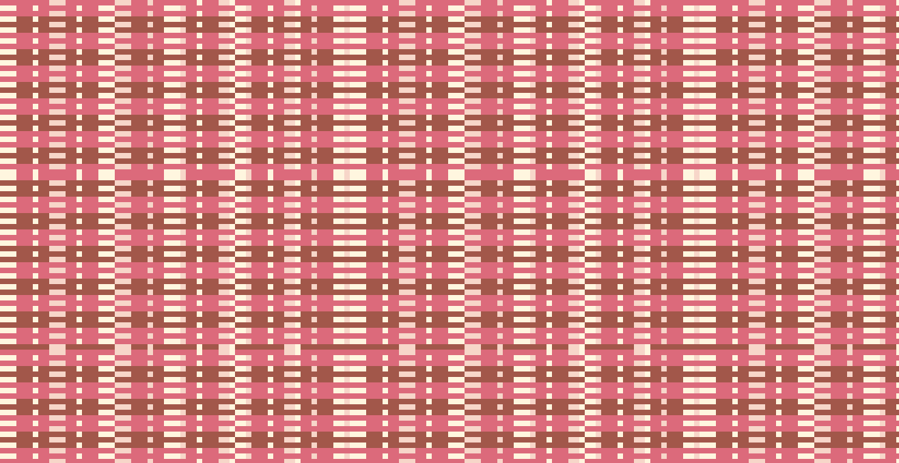
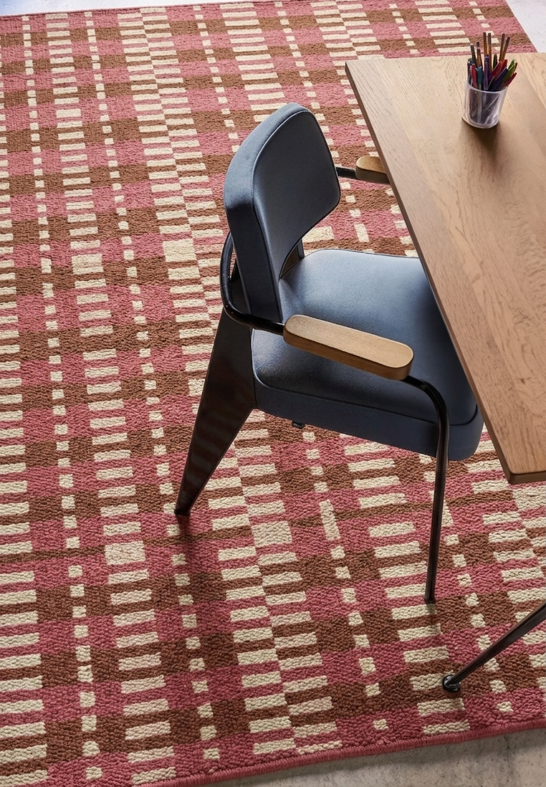
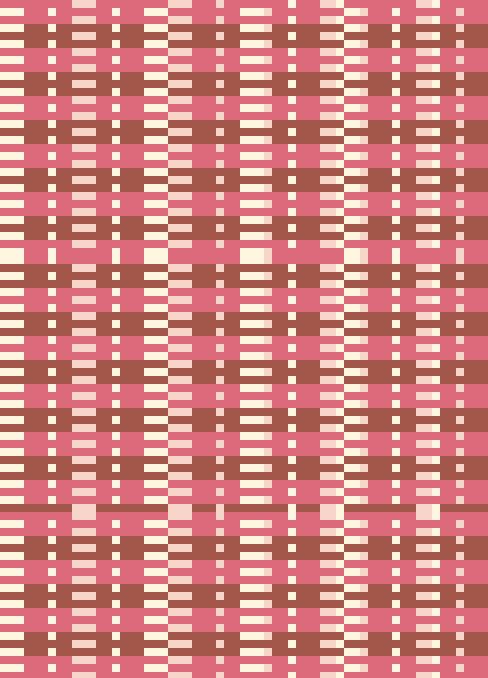
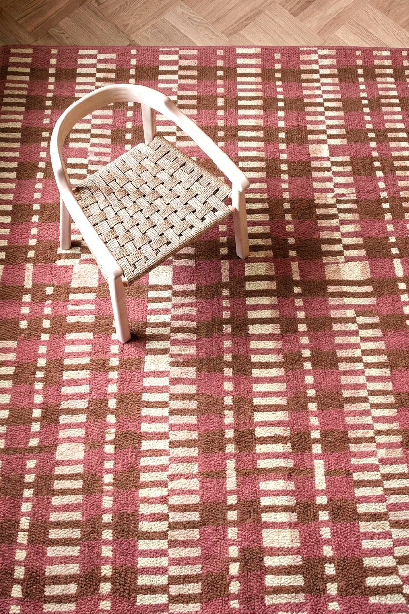

Most clothing is made fast. The entire supply chain of fast fashion is built around compression. Reducing the time between design and sale to days, and the time between purchase and disposal to weeks.
This piece is about the opposite. The full production cycle of a wool garment: shearing, scouring, carding, spinning, weaving, finishing. From sheep to finished garment, the process takes between six and twelve months. The sheep is shorn once a year. The fibre is processed by hand and machine across a chain that cannot be accelerated without compromising the material. A quality wool garment, made properly, can remain in active use for twenty to thirty years.
Research into the environmental impact of wool production found that the number of times a garment is worn is the single most influential factor in determining its environmental footprint.
Wool garments stay in use longer than garments made from other fibres, and are more likely to be recycled. The slowness of the production process is not a flaw. It is the argument. This pattern encodes that slowness.


